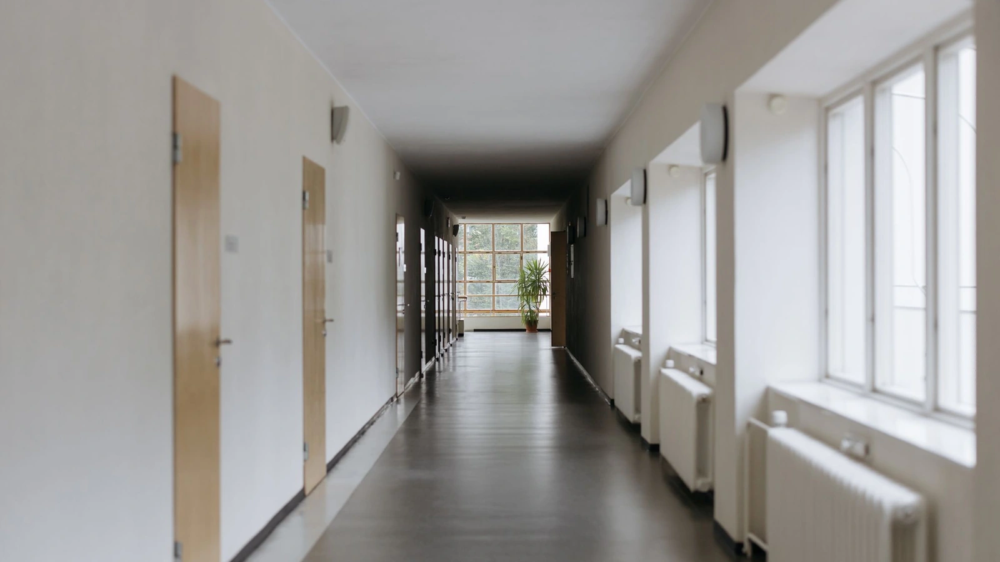
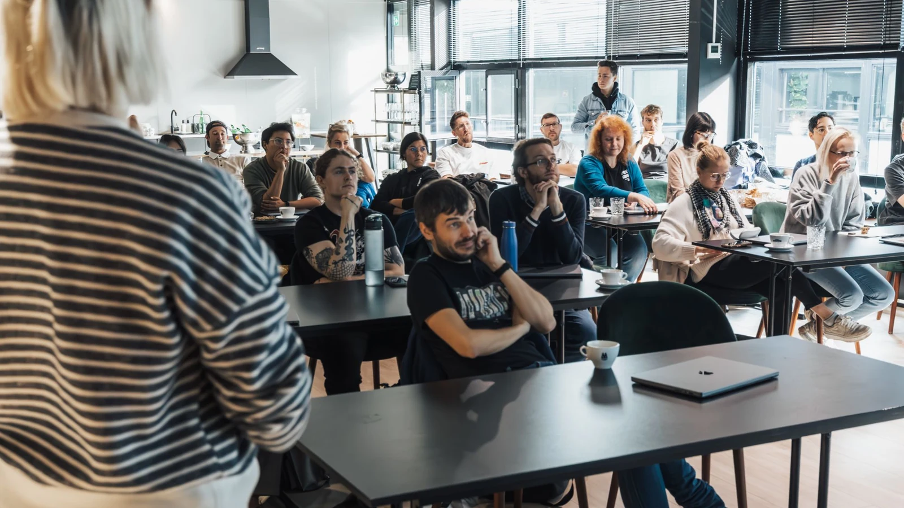
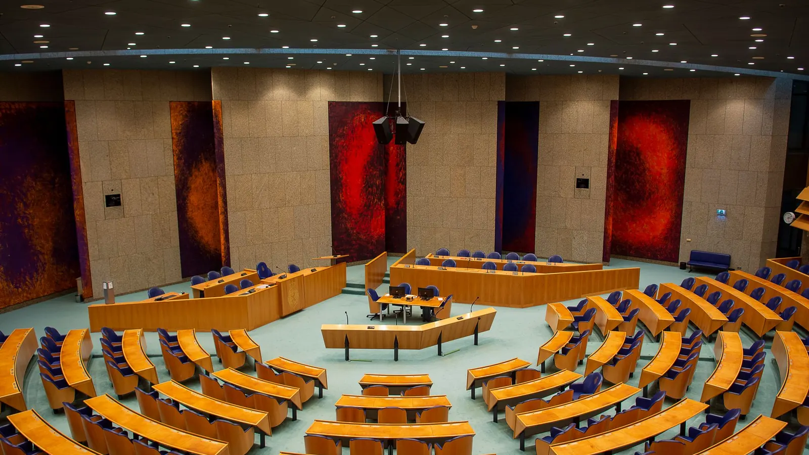
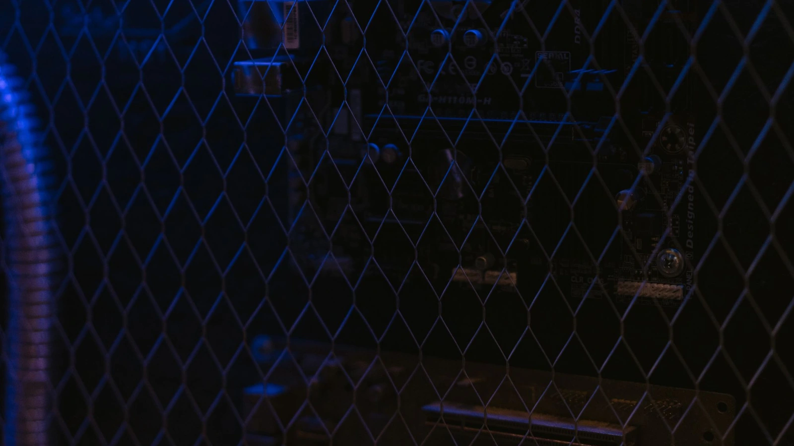
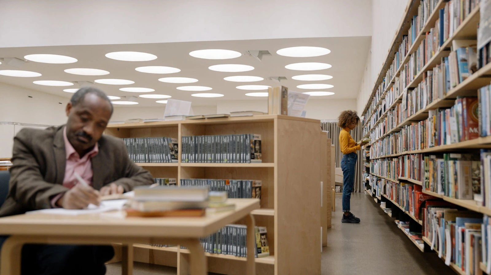
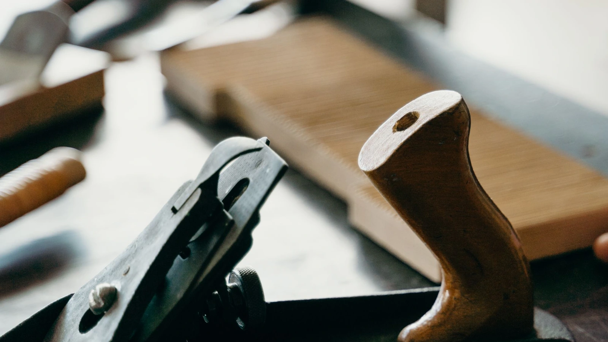
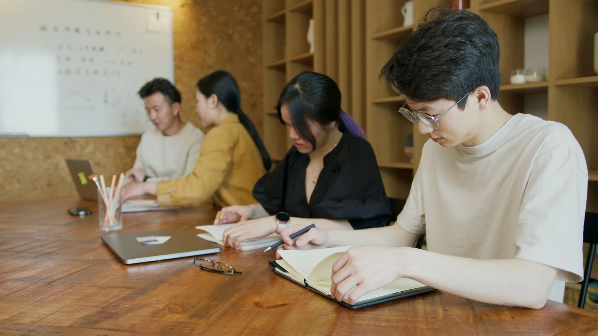
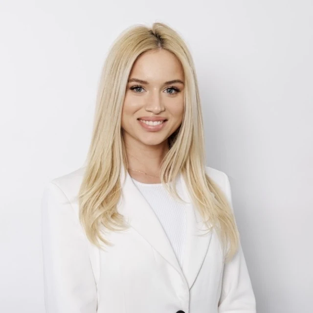

Erasmus+ akreditācijas konsultācijas
Palīdzam sagatavot Erasmus plānu, definēt mērķus un iegūt akreditāciju, kas nodrošina stabilu finansējumu vairākiem gadiem uz priekšu.
Mēs savienojam Latvijas skolas, pedagogus un jauniešus ar Eiropas iespējām, starptautisku pieredzi un jaunām pieejām izglītībā.

Starptautiskas programmas, partnerības, attīstība.

Apmācības, resursi, profesionālā izaugsme.

Prasmes, projekti, starptautiska pieredze.

No idejas līdz praktiskiem risinājumiem klasē.

Pierādījumi labākai izglītības politikai.
Nodibinājums "Baltic Foundation for Future Education" ir bezpeļņas organizācija Rīgā. Mēs veidojam tiltu starp Latvijas izglītības iestādēm un Eiropas iespējām — lai starptautiskā pieredze nonāktu līdz konkrētai klasei, konkrētam skolotājam un konkrētam skolēnam.
Mūsu darbs balstās trijos pamatos: pētniecībā, kas seko līdzi izglītības pārmaiņām; praksē, kas nāk no ikdienas darba ar skolām; un partnerībā ar organizācijām visā Eiropā. Mēs ticam, ka nākotnes prasmes nav abstrakcija, bet ikdienas darba jautājums.
Katrs virziens ir izaudzis no reālas vajadzības, ko esam dzirdējuši no skolu vadītājiem, pedagogiem un partneriem. Izvēlieties to, kas jums aktuāls.
Atbalsts Erasmus+ akreditācijā, projektu īstenošanā un starptautiskās partnerībās.
Uzzināt vairākProfesionālās pilnveides kursi un mobilitātes iespējas Eiropā.
Uzzināt vairāk
Prakses vietas, sadarbība ar uzņēmumiem un starptautisko praktikantu uzņemšana.
Uzzināt vairākJauniešu apmaiņas, Model UN un debašu turnīri, līdzdalības projekti.
Uzzināt vairākPētniecība, konferences un mācību metodikas darbam ar mākslīgo intelektu.
Uzzināt vairākMūžizglītības programmas un digitālo prasmju kursi kopienām.
Uzzināt vairāk
Angļu valoda, kritiskā domāšana un starpdisciplināras programmas skolām un organizācijām.
Uzzināt vairākErasmus+ dokumentācija bieži attur skolas, kurām ir lieliskas idejas. Mēs konsultējam un ejam līdzi visā procesā, lai skolas komanda iegūtu zināšanas un pārliecību to darīt arī pašai.
Palīdzam sagatavot Erasmus plānu, definēt mērķus un iegūt akreditāciju, kas nodrošina stabilu finansējumu vairākiem gadiem uz priekšu.
Palīdzam saprast budžeta plānošanu, līgumus, mobilitāšu organizēšanu un atskaites, un esam pieejami tad, kad rodas jautājumi.
Veidojam un vadām konsorcijus, kuros arī mazākas skolas iegūst piekļuvi projektiem, kas atsevišķi būtu par lielu.
Atrodam skolas Eiropā, kuru prakse tiešām atbilst jūsu attīstības mērķiem, un kopā sagatavojam vizītes saturu.
Kopā ar skolu veidojam Eiropas studiju moduļus un aktivitātes, ieskaitot mācību saturu un izvērtēšanas plānu.
Mūsu kursus vada praktiķi, kas paši strādā klasē. Katra programma beidzas ar konkrētu materiālu, ko varat izmantot savā priekšmetā jau tuvākajās stundās.
Divu dienu programma par mākslīgā intelekta rīkiem mācību plānošanā, diferenciācijā un vērtēšanā — ar godīgu sarunu par riskiem un akadēmisko godīgumu.
Eksperimentu un projektu darba metodikas, kas strādā arī tad, ja skolas laboratorija ir pieticīga.
Kursi un pieredzes apmaiņa partnerskolās Eiropā; palīdzam sagatavot Erasmus+ finansējuma pieteikumu.
Pēc kursa saņemat gatavus stundu plānus, uzdevumu piemērus un metodiskos ieteikumus latviešu valodā.
Profesionālā izglītība strādā tad, kad audzēknis redz savu nākotnes darbu no iekšpuses. Mēs savedam kopā koledžas, tehnikumus un uzņēmumus — Latvijā un ārpus tās.
Meklējam un pārbaudām uzņēmumus, kas var uzņemt jūsu audzēkņus, un palīdzam sagatavot mācību līgumus un mobilitātes dokumentus.
Palīdzam veidot ilgtermiņa partnerības, kurās uzņēmums piedalās arī mācību satura veidošanā, ne tikai uzņem praktikantus.
Uzņemam Eiropas partneru audzēkņus Latvijā: atrodam uzņēmumus, kārtojam izmitināšanu un nodrošinām mentoringu visas prakses laikā.
Europass mobilitātes dokumenti un skaidri aprakstīti mācību rezultāti, lai iegūtā pieredze būtu redzama arī CV.
Viena starptautiska pieredze bieži izmaina jaunieša priekšstatu par to, kas viņam ir pa spēkam. Mēs veidojam programmas, kurās jaunieši ir dalībnieki, nevis klausītāji.
Erasmus+ apmaiņas ar partneriem Eiropā par tēmām, ko jaunieši izvēlas paši: klimats, mediju pratība, uzņēmējdarbība, kultūra.
Organizējam turnīrus un sagatavojam komandas starptautiskiem pasākumiem, kur trenējas argumentācija, publiskā runa un diplomātija.
Atbalstām jauniešu iniciatīvas, kas risina konkrētu jautājumu savā skolā vai pašvaldībā — no idejas līdz finansējumam.
Darbnīcas jauniešu līderiem un jaunatnes darbiniekiem par grupu vadīšanu, projektu rakstīšanu un komandas darbu.
Mākslīgais intelekts izglītībā nav nākotnes jautājums, bet šīs mācību dienas jautājums. Mūsu uzdevums ir pārtulkot strauju tehnoloģiju attīstību valodā, ko var izmantot skolotājs un saprast skolas vadība.
Sekojam AI ietekmei uz mācīšanos, vērtēšanu un skolotāja darbu, un apkopojam secinājumus praktiskos, lasāmos ziņojumos.
Rīkojam pasākumus, kuros satiekas pedagogi, pētnieki un tehnoloģiju veidotāji — ar godīgu sarunu gan par ieguvumiem, gan riskiem.
Izstrādājam stundu modeļus un vērtēšanas pieejas, kas ņem vērā realitāti: AI rīki skolēniem jau ir pieejami.
Uzstājamies konferencēs un konsultējam skolu vadību par AI stratēģiju un lietošanas principiem iestādē.
Darba tirgus mainās ātrāk nekā kvalifikācijas. Mēs veidojam programmas pieaugušajiem, kuriem vajadzīgas jaunas prasmes — bez akadēmiskas distances un sarežģītas valodas.
Praktiskas nodarbības par ikdienas digitālajiem rīkiem un AI asistentiem darbā, pielāgotas dažādiem sagatavotības līmeņiem.
Sadarbībā ar pašvaldībām un bibliotēkām veidojam kursus reģionos, kur piekļuve apmācībām ir ierobežota.
Komandu apmācības biedrībām un izglītības iestādēm par projektu vadību un starptautisko sadarbību.
Šīs ir programmas, ko fonds izstrādā un vada pats — skolām, organizācijām un mācību grupām. Nodarbībās vairāk runā nekā klausās: valoda un domāšana tiek lietotas, nevis aprakstītas.
Grupu programmas, kurās veidojas drošība runāt un prasme rakstīt strukturēti. Sagatavojam arī starptautiskajiem eksāmeniem, nezaudējot uzsvaru uz dzīvu, saprotamu valodu.
Argumentācija, avotu izvērtēšana un mediju pratība. Mācāmies atpazīt manipulāciju un veidot pamatotu viedokli — arī tad, kad tas nesakrīt ar vairākuma viedokli.
Angļu valoda kopā ar vēsturi, ekonomiku un sociālajām zinātnēm: skolēni pēta reālas tēmas, strādājot svešvalodā (CLIL pieeja). Valoda kļūst par darba rīku, nevis atsevišķu priekšmetu.
Angļu valoda organizācijām un komandām: prezentācijas, sarunas, starptautiskā sarakste un komunikācija projektos. Saturu veidojam no reālām jūsu darba situācijām.
Nodibinājums "Baltic Foundation for Future Education" dibināts Rīgā ar mērķi stiprināt Latvijas izglītības iestāžu spēju darboties starptautiskā vidē. Mēs neaizstājam skolu — mēs palīdzam tai izdarīt to, kam ikdienā pietrūkst laika un resursu.
Fonda darbu pārrauga padome, kurā pārstāvēti izglītības vadības, pētniecības un starptautiskās sadarbības eksperti. Visi ieņēmumi tiek novirzīti statūtos noteikto mērķu sasniegšanai.

Dibinātājs un valdes loceklis Adriāna Leonora MartinkēvičaAdriāna ir pedagoģe, izglītības vadības speciāliste un pētniece ar pieredzi gan valsts izglītības sistēmā, gan privātajā sektorā. Papildus angļu valodas mācīšanai viņa ir vadījusi debašu un publiskās runas programmas, koordinējusi Erasmus+ aktivitātes un organizējusi starptautiskās skolēnu apmaiņas.
Šobrīd viņa apgūst doktora studijas izglītības vadības jomā Latvijas Universitātē. Viņas doktora pētījums pēta skolotāju trūkumu Eiropā un to, kā izglītības politika var padarīt skolotāja profesiju pievilcīgāku.
Adriāna ir zinātnisku publikāciju autore izglītības jomā un ir prezentējusi savu pētniecību starptautiskās akadēmiskās konferencēs. Viņas darbā apvienojas izglītība, pētniecība, starptautiskā sadarbība un praktiskā pieredze darbā ar skolotājiem un jauniešiem.
Ja veidojat Erasmus+ konsorciju vai starptautisku projektu un jums nepieciešams uzticams partneris Latvijā — uzrunājiet mūs. Atbildam divu darba dienu laikā un godīgi pasakām arī tad, ja projekts nav mūsu kompetencē.